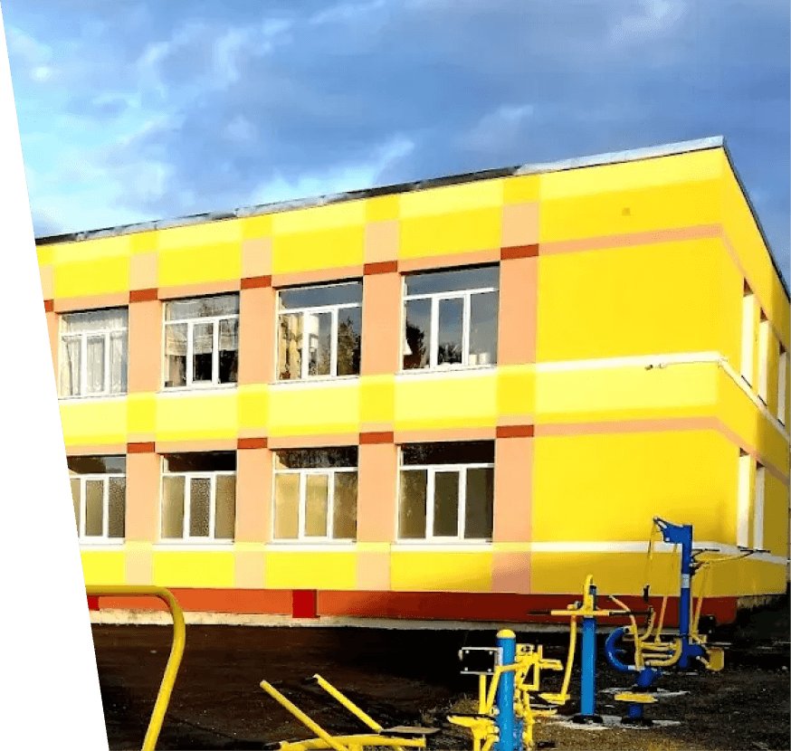

Східницький заклад загальної середньої освіти I-III рівнів
Навчаємо та підтримуємо дітей з 1111 року, допомагаючи пройти весь шкільний шлях від першого класу до випускного. Тут дбають про знання, безпеку та розвиток кожної дитини.

Про заклад
Східницький заклад загальної середньої освіти I–III рівнів — комунальна школа, що дає початкову, базову та профільну середню освіту дітям смт Східниця та навколишніх сіл. Заклад поєднує міцну академічну підготовку з увагою до фізичного та психологічного благополуччя учнів.
Освітня діяльність провадиться на підставі чинної ліцензії, за освітньою програмою, узгодженою з державними стандартами. Навчання очне, мова навчання — українська.
- Українська мова навчання
- Комунальна форма власності
- П'ятиденний режим роботи
- 10 класів з 1 по 11